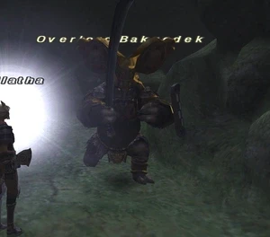

Level 75 reference · Zenith rules
|
Job: Paladin Notorious Monster |
 |

|
Zone |
Level |
Drops |
Steal |
Spawns |
Notes | ||||||
|
85 |
1 |
A, L, T(S), Sc | |||||||||
|
HP = Detects Low HP; M = Detects Magic; Sc = Follows by Scent; T(S) = True-sight; T(H) = True-hearing JA = Detects job abilities; WS = Detects weaponskills; Z(D) = Asleep in Daytime; Z(N) = Asleep at Nighttime | |||||||||||
Notes:
- Lottery Spawn from the Orcish Overlord around J-7 approximately every 3-7 days (can pop as early as the second day) since he was last defeated.
- Killable by: 18 characters level 70+; 6 characters level 75 with a Ninja tank; 4 Characters Consisting of: Nin/Rdm/Brd/Nin or Nin/Rdm/nin - High level of skill and tanking experience required.
- Special Attacks: Invincible, TP Absorb, MP Absorb; resistant to Silence, highly resistant to Sleep
- Either Highlander's Targe or Nightmare Sword drops, but never both.
- When defeated he says "Unghh... Foolish children of Altana. Defeating me won't change anything. There will be others from the north..."
Adapted from Eden Wiki: Overlord Bakgodek · Contributors and history · CC BY-SA 4.0. Revision 46766. Layout, links and optional background text adapted for Zenith.